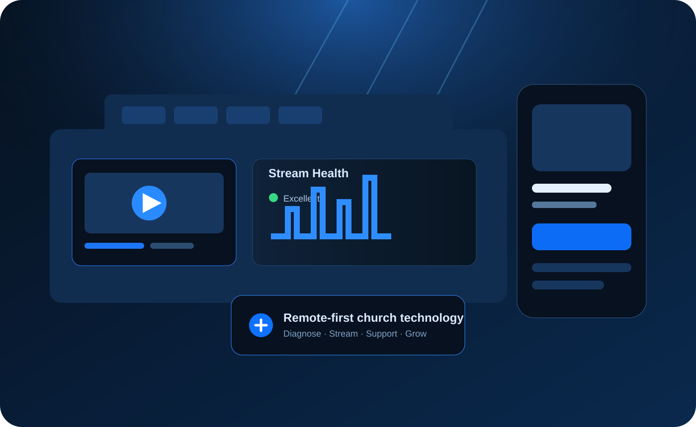

Available now · founding pilot
GatherBeam Remote
Livestream and AV diagnostics, troubleshooting, system review and remote optimization.
GatherBeam is building one intelligent platform to help churches diagnose, fix, stream, create, reach, and grow—remotely first, with premium onsite help when physical work is truly needed.

GatherBeam is designed as a modular church technology operating layer. The founding pilot begins with remote diagnostics; additional modules are added only as customer demand validates them.
Livestream and AV diagnostics, troubleshooting, system review and remote optimization.
Reliable streaming, recording, monitoring, scheduling and multi-destination delivery.
Managed church-side streaming and telemetry appliance for secure remote support and automation.
Web, mobile and connected-TV destinations for live services, sermons, clips and ministry media.
Turn services into clips, podcasts, captions, devotionals, social content and searchable archives.
Local discovery, campaigns, Plan Your Visit, visitor follow-up and congregation-growth analytics.
Church production training, configuration libraries, volunteer workflows and certification.
Physical commissioning, integration, cabling, audio, video, networking and complete AVL projects.
A church submits the stream, equipment and problem. GatherBeam analyzes the system, identifies probable causes, prioritizes changes, verifies outcomes and documents what worked.
Livestream URL, audio, screenshots, equipment and problem description.
Review audio, video, cameras, encoder/software, network and workflow.
Rank findings by impact, confidence, difficulty and urgency.
Self-serve corrections or guided remote optimization when helpful.
Document the result so future support gets faster and more accurate.
The first commercial GatherBeam product. No large software build. No equipment sales pitch. Just a structured remote review of the church technology you already have.
If the church can improve its current system through configuration, routing, workflow or training, we say so. If physical work is genuinely required, GatherBeam can escalate to premium onsite service rather than forcing every issue into a truck roll.
Founding-pilot operating model: customer-facing GatherBeam experience, fulfilled using existing Steel City Integrators infrastructure while demand and workflow are validated.
The long-term platform keeps the church's rooms, equipment, settings, stream history, device health, support history, content, growth campaigns and outcomes together—creating a persistent technology digital twin instead of making the church explain its system from scratch every time.
Begin with Remote